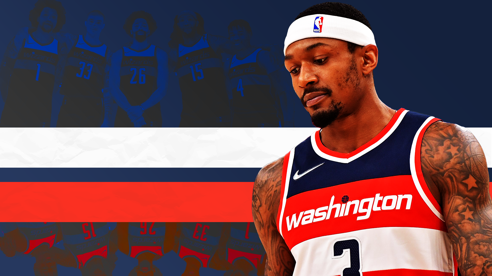
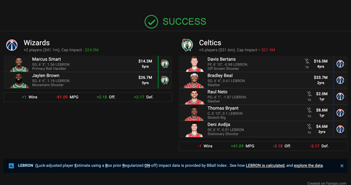
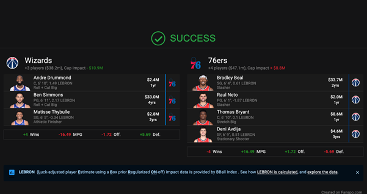

What the hell has happened to the Washington Wizards?
Short answer: heaps. Long answer: I guess that’s why you’re reading this article or you’re in the right place (or something along those lines).
Sean Carroll illustration
T o start the season, the Washington Wizards were playing connected, together and with purpose. Offensive possessions were characterised by flow and rhythm and time was the most important value; if nothing was doing, get the ball moving.
Defensively, they were playing for each other with a willingness to leave their assignment for the betterment of the team. It didn’t even feel like I was watching basketball during our 10-3 start, I just felt like I was watching a group of mates vibing. It’s like hanging out came first, winning came second and basketball came third.
The craziest part is that the way we were playing was sustainable as it wasn’t reliant on a player’s skill set, but rather, their attitude. Each player’s ability was a luxury on top of their participation within the system. Funnily enough, when their skill set came second to their role within the team, they were able to demonstrate more of it, creating more individual highlights.
What da heck happen?
This team, by my count, has 12 players worthy of 20 minutes in an NBA rotation, which is down from 13 at the beginning of the season. That reminds me, it’s time for a Davis Bertans update: he’s still shit.
The issue isn’t that there are a bunch of talented role players on the roster, it’s the lack of guys you want playing 36 minutes a night. The safe opinion here is to say there’s one player on the roster who should be getting 36 minutes: Bradley Beal.
I don’t know if this is the truth. In Beal’s two seasons in which he averaged over 30 points per game, the Wizards were below .500. In two of his three All-Star seasons, the Wizards were below .500. ‘Good stats bad team’ or ‘empty calorie scoring’ are two terms that echo throughout the NBA commentariat, and you just have to pray that your team doesn’t employ one of those players. I’m not saying that Beal definitively is one of those players, but there’s a case.
Quotes from Beal like “I’m giving the Wizards an opportunity,” via Tom Robbins, The Athletic concern me as a Washington fan. What has Brad done to warrant this sort of power within an NBA team? What success can you directly link to his input?
He’s a crazy good scorer, his lateral shiftiness and ability to get balanced after stopping on a dime is unmatched throughout the league. There’s a wide open hesi pull up jimbo waiting for him on every possession if he so chooses.
His assists have seen an uptick this season, but his willingness to pass has regressed as the 2021-22 season has progressed. He used to be happy with the hockey assist, but now it seems the aforementioned willingness to pass is only present when it may end up in an assist.
Now I ain’t no Poirot, heck, I ain’t even a Sherlock Holmes, but in the six games following and including Beal’s return on January 17, Dinwiddie has averaged 9-4-5 on sub 30 percent from the field and from behind the arc.
Dinwiddie also came out and told Chase Hughes, NBC Sports Washington: “It's an interesting situation. I spoke up a little bit early on [this season]. It wasn't necessarily welcomed. And so, like I said, I try to do whatever's asked of me. At the end of the day, everybody has a role to play.
“It's about being accountable in your role and doing that to the best of your ability. That's really all I've got.”
I’m getting this weird feeling that the Washington Wizards starting shooting guard Bradley Beal is one of the only - if not the only - person that didn’t welcome Dinwiddie’s input. Compound this with Tommy Shepard giving Beal some autonomy in the decision making n Washington, mixed with a history of being a bit of a dickling (see; everybody eats), maybe Brad is part of the issue.
I’m not saying that he is the whole issue, I’m saying there is an issue and we have to look at everyone equally.
I’m also suggesting that the Charlotte Hornets didn’t extend Kemba Walker, and look at how good their future looks now…
There are 11 other guys who should be getting 20 minutes in an NBA rotation, and that’s too many. 20 minutes is the baseline, but how can a player possibly find a rhythm in 20 minutes of game time? This inability for a player to explore their potential is very limiting and we need to be buyers at the deadline as things already seem to be going sour. Holding until the offseason may see a mass exodus.
-
Let’s view the centre rotation for our case study. Daniel Gafford, Montrezl Harrel and Thomas Bryant. TB, you’re a hyper efficient offensive weapon whose jump shot keeps improving. Yes, you may have lapses in energy and you may seem a bit passive at times, but that’s okay because of the next guy.
-
Montrezl, you inject energy into the team every time you step on the court. Whether it be the characterless second quarter in a game where we’re up by 15 or we’re on the wrong end of a 20-point blowout with three minutes left in the fourth, you play like your life depends on it. You’re 6’7” but I’ve yet to see you come up against someone you haven’t gone straight through. I’m pretty sure I’ve seen you do the “too little” celebration to a footer. Yes, you may not be the best defender, but that’s okay because of the next guy.
-
Yo, I wanna give a huge shoutout to my boy Daniel for his approach to defence. Every team would be lucky to have your rim protection and your willingness to put your body on the line and contest what seems like a sure dunk from your opponent is commendable. The team defends for each other when you’re on the court, as they know they can leave their assignment and scramble, allowing drives, knowing that if the perimeter players take these lanes they’re going to have to come through you. Yes, you may not space the floor offensively, or be a low post option, but that’s okay because of the next guy. TB…
This is a perfect insight as to why too much depth is an issue. If all three of these guys were to get 16 minutes a game (16+16+16=48, which is the number of minutes in an NBA game) at centre then there’s no way they would be effective, and there’s no way they could develop.
For the rest of the team, forming familiarity would be an issue, and continuity would take longer for the Wizards to realise than teams with shorter rotations and more well-defined cores. Our identity started to take shape at the beginning of the season, but with the nature of our roster and build up, the next step of this identity needed to be taken in December. I am going to be sad when we make a trade. I love this roster, but if we downsize in a two-for-one or even a three-for-two, I’ll understand.
Also, I mean I’m talking about a basketball team right now, so it isn’t that big of a deal.
So how can we recapture our early season form?
We need to know what our core looks like for the rest of this season and moving into next season. I’m currently taking a shit after having watched the Wizards lose to the Milwaukee Bucks, but I have to tell you, we look very cohesive when Bryant and Beal aren’t out there. The defence takes so much more shape with Gaff on the court, and the Bucks had no answer for Montrezl until they keyed their whole defensive gameplan around stopping him.
With a well-defined core, we would be able to react to the Bucks loading up on Montrezl and get into our offensive stuff down the stretch with 16 seconds on the shot clock rather than chucking up heave after heave.
We just beat the Philadelphia 76ers (yes, it takes me a while to write these articles) in Philly for the first time since 2016 and our team looked like a team… without Beal or Bryant. A couple of missed shots in a row didn’t affect morale, players weren’t worried about their touches or their numbers, they played their role within the system, and their skill set was a luxury.
The team worked for open shots, and they got them. Kyle Kuzma had 24 points on 19 shots, Montrezl had 14 on 10 shots, Rui Hachimura had 11 on 6 and Dinwiddie had his first career triple double. Everybody eats, am I saying that right?
This wasn’t initially going to be a part of this article, but given the proximity to the trade deadline, it’s an NBA fan/analyst/fanalyst’s job to put their ego to the side and load up Fanspo’s trade machine.
 You get the idea, Beal, Bryant, Deni Avdija and subsidiary pieces out, 6’7”-plus son of a gun and good defender in return. If you think draft picks need to be added in either direction, you may do this at your own discretion, I personally don’t give a rat’s clacker about them.
Two months ago, I would have been happy to sit tight for the next five years, but the NBA moves quickly (I think I’m the first person to break that too, so you can quote me there). I think we need to be buyers at the deadline, and I think we need to say goodbye to Beal.
The start of the season looked like a new chapter in Washington Wizards history, but with Brad’s return, it seems like the same old bullshit. I would welcome new bullshit, but definition of insanity etc. Mr. Shepard took the Lakers to the wool shed in July of 2021, so here’s hoping Shepard keeps shearing over the next week.